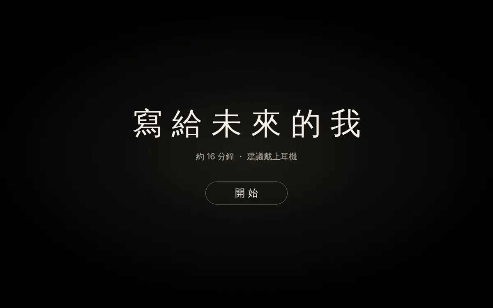
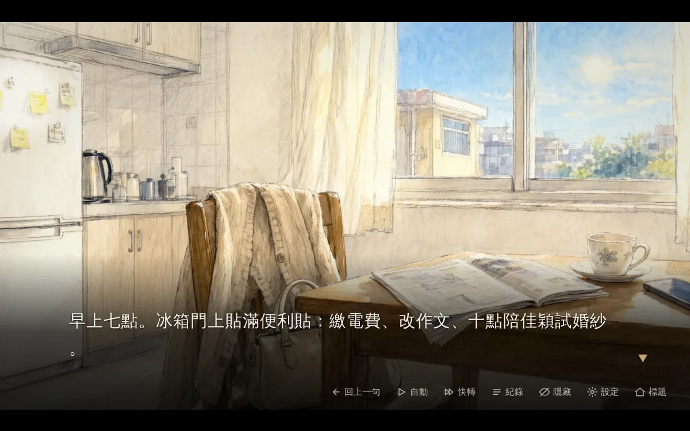
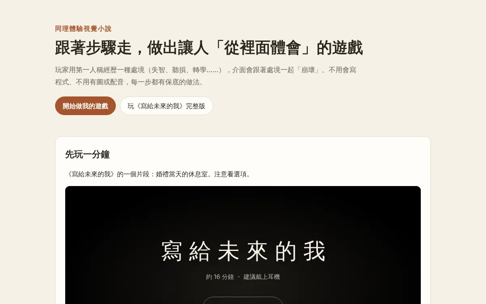
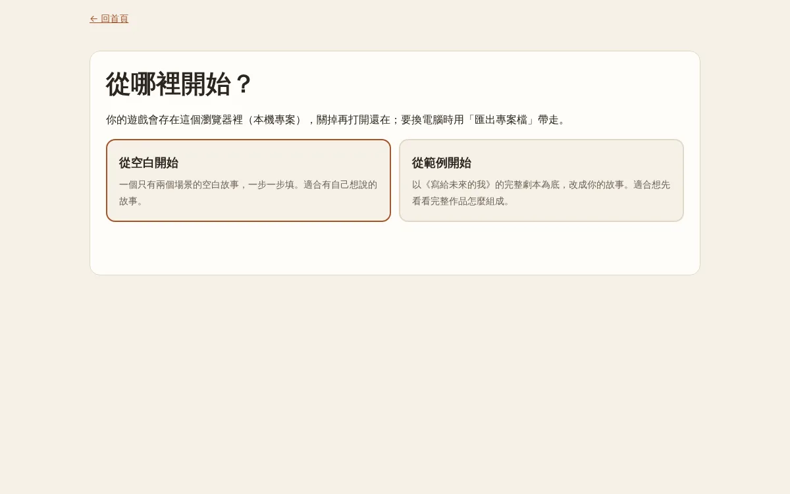
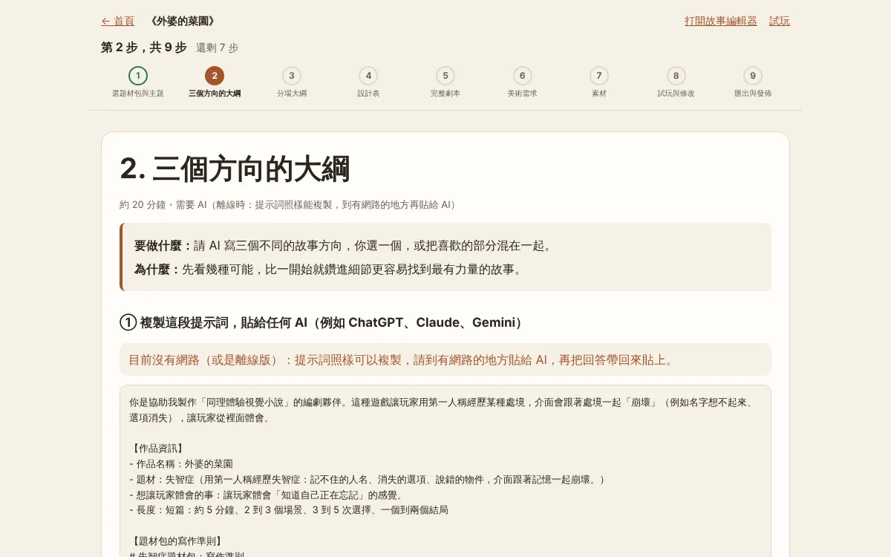
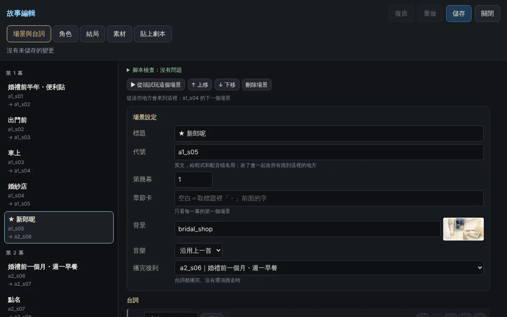

使用說明
這是「同理體驗視覺小說」的離線版：不用安裝任何東西、不用網路，就能玩範例遊戲，也能一步一步做出自己的遊戲。
1. 先解壓縮
下載的是一個壓縮檔（.zip）。一定要先解壓縮，不要直接在壓縮檔裡面點開，否則圖片和聲音會讀不到。
- Windows：在壓縮檔上按右鍵 →「全部解壓縮」→「解壓縮」。
- Mac：雙擊壓縮檔，旁邊會出現一個同名的資料夾。
解壓縮後的資料夾裡有這些檔案：
| 檔案 | 用途 |
|---|---|
| 開始.html | 做自己的遊戲（引導網站） |
| 玩 Demo.html | 玩範例遊戲《寫給未來的我》 |
| 空白範本.html | 一個空白的遊戲，給想直接用故事編輯器的人 |
| 使用說明.html | 這一份說明 |
| examples、templates、packs 資料夾 | 範例、範本與題材包的檔案。不要移動或改名，html 檔要和它們放在一起。 |
建議用 Chrome 或 Edge 開啟。Safari 對直接開啟電腦裡的檔案限制比較多，如果遇到問題請改用 Chrome。
2. 玩範例遊戲《寫給未來的我》
雙擊 玩 Demo.html，按「開始」。約 16 分鐘，建議戴上耳機。


3. 做自己的遊戲
雙擊 開始.html。首頁可以先玩一分鐘的片段，再按「開始做我的遊戲」。

選擇「從空白開始」（自己的故事）或「從範例開始」（以《寫給未來的我》為底改寫）。

九個步驟
畫面上方永遠看得到「現在在第幾步、還剩幾步」。每一步都可以回上一步修改，也可以「先跳過，用佔位內容」。

- 選題材包與主題：作品名稱、處境（例如失智症）、一句話寫下想讓玩家體會什麼。
- 三個方向的大綱（需要 AI）
- 分場大綱（需要 AI）
- 設計表（需要 AI）：可以點的物件、隱藏選項、每個效果用在哪裡。
- 完整劇本（需要 AI）：貼回來的劇本會先檢查，有「必須修正」的問題時，會附上可以直接貼給 AI 的修正提示詞。
- 美術需求（需要 AI）：產生美術說明與生圖提示詞。
- 素材：上傳圖片、音樂、配音，或保留佔位圖。
- 試玩與修改
- 匯出與發佈
沒有網路的電腦也能做：提示詞照樣可以複製。把提示詞帶到有網路的電腦（或手機）貼給 AI，再把 AI 的回答帶回來貼上。
故事編輯器
任何時候都可以按上方的「打開故事編輯器」，不用寫程式就能新增場景、寫台詞、做選項分支、上傳素材。

4. 你的作品存在哪裡
- 作品存在這台電腦的這個瀏覽器裡（本機專案）。關掉再打開還在，首頁會有「繼續」。
- 換電腦、換瀏覽器、清除瀏覽紀錄時會看不到。請常常到第 9 步按「匯出專案檔（.vnproj）」備份。
- 要在別的電腦繼續：打開遊戲頁，按 ` 鍵（Esc 下方）或網址加
?dev=1打開開發者面板，在「專案」選「開啟專案檔」。
5. 給別人玩
第 9 步按「匯出可以玩的版本」，會下載一個壓縮檔：
- 傳給別人，對方解壓縮後雙擊 html 就能玩，不需要網路。
- 把資料夾裡的全部檔案放到學校、單位的網站，或免費的 GitHub Pages（第 9 步有步驟），就有一個網址可以分享。
6. 離線時被簡化的效果
直接開啟電腦裡的檔案時，瀏覽器不允許某些聲音處理，所以有幾個效果會自動簡化（遊戲照樣能玩）：
- 音樂的「走音」只改變速度與音量，沒有「變悶」的濾波。
- 「聲音變悶」的效果只會降低音量。
- 匯出專案檔只包含你自己上傳或開啟的素材，不含範例內建的素材。
- 文字編輯、故事編輯的「儲存」：開著本機專案時存進瀏覽器；沒有本機專案時改成下載 script.json。
7. 常見問題
雙擊後一片空白，或圖片沒有出來
多半是沒有先解壓縮，或把 html 檔從資料夾裡拿出來了。請整個資料夾解壓縮，在資料夾裡雙擊。
沒有聲音
瀏覽器規定要先點一下畫面才能出聲：按「開始」後就會有聲音。也請檢查電腦音量與遊戲「設定」裡的音量。
畫面晃動、閃爍讓人不舒服
這是表現處境的效果。如果不舒服請先休息；之後的版本會提供關閉這類效果的設定。
Safari 打不開或不能存
Safari 對直接開啟電腦裡的檔案限制比較多，請改用 Chrome 或 Edge。